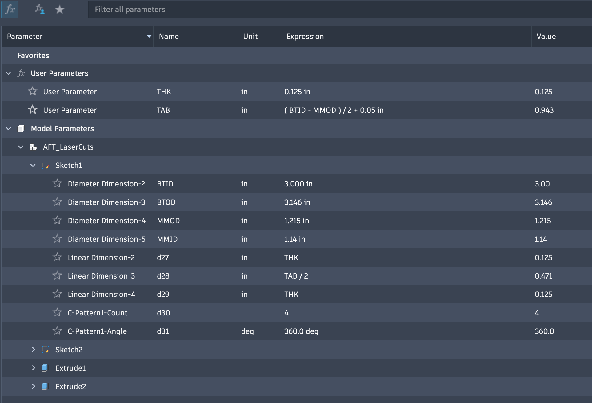
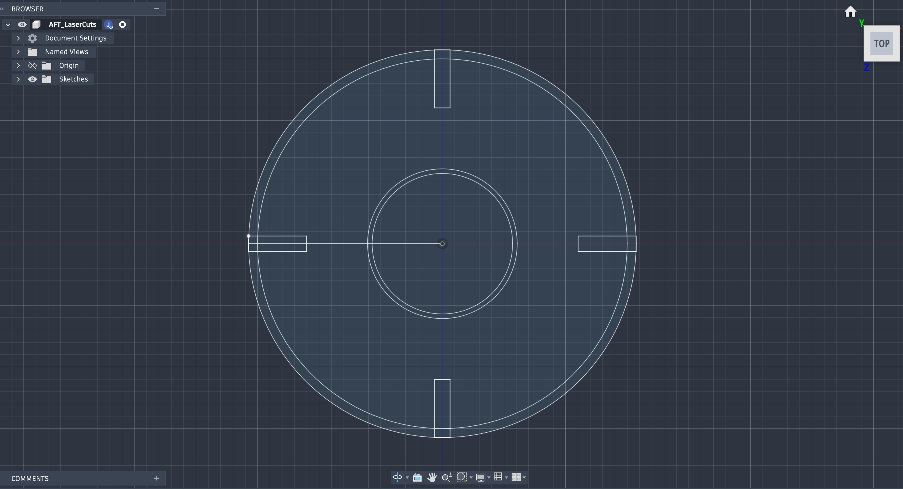
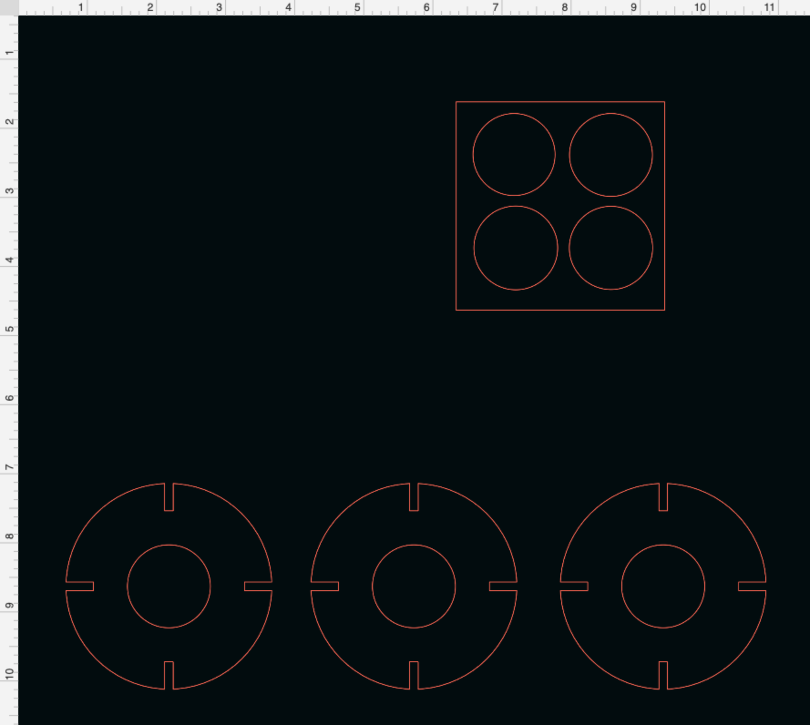
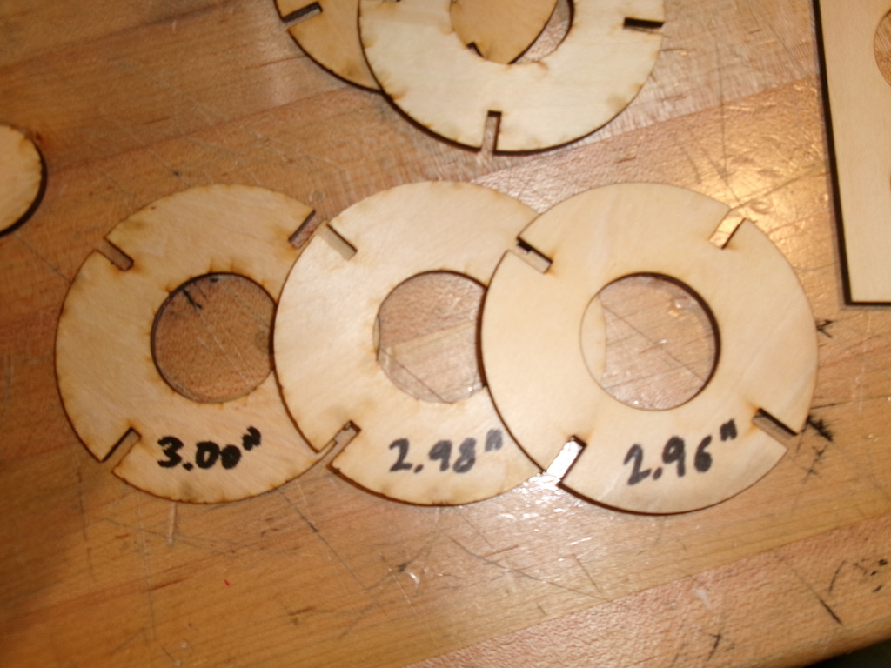
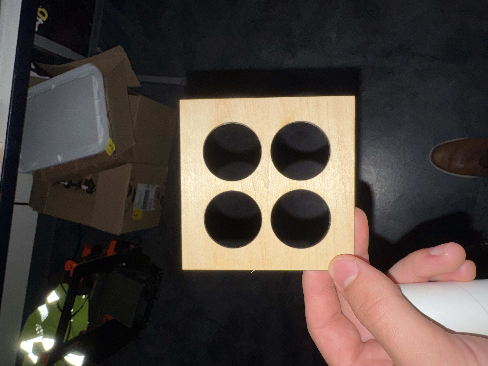
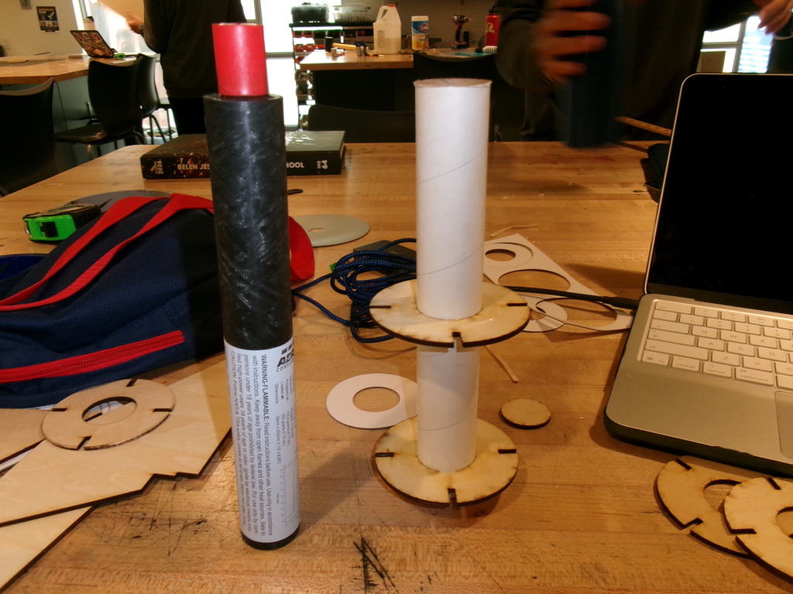

Laser Cutting
We just started using the laser cutter to make parts for our model rockets.


I started with a parametric sketch on Fusion to visualize the design in the context of the rocket. I made it so that I can input the thickness of the material that I'm using and the inner and outer diameter of the body tube and the centering ring will be automatically sized to fit.



I then exported the sketch as a DXF and imported it into the laser cutter software to cut it out of 1/8" plywood. To check the tolerances, I made a test piece to check the hole diameter and 3 different centering rings to check the outer diameter.

The 1.21" ID and 2.98" OD centering rings fit perfectly and I used wood glue to put them in place.